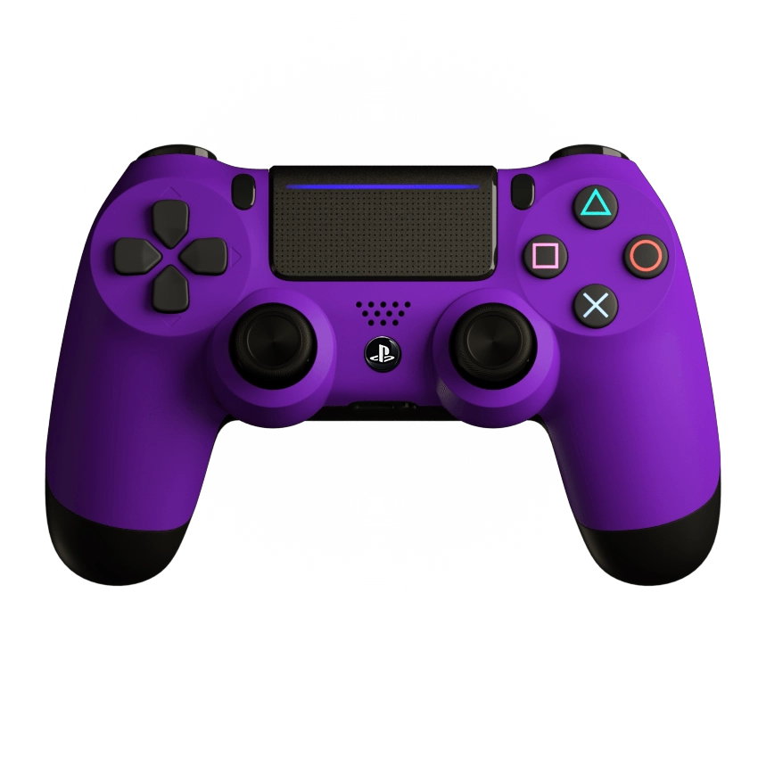
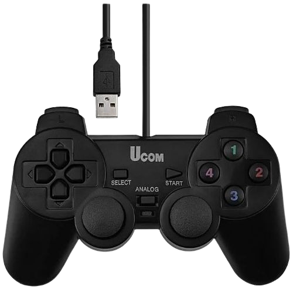

Torrent is a peer-to-peer file sharing protocol that enables users to distribute data over the internet efficiently.
It allows users to download and upload files simultaneously, making it a popular choice for sharing large files such as games, movies, and software.
• We need it to download the game files
• We can pause and resume the download
• Very useful for slow internet and large files
To download Torrent Click Here
You Should have first Torrent and WinRAR

WinRAR is a file archiver utility for Windows that can create and view archives in RAR or ZIP file formats.
It also supports unpacking various archive file formats. WinRAR is widely used for compressing files to save space and for bundling multiple files together for easier sharing.
• We need it to extract the game files
• Reduce file size for easier sharing
• Protect files with encryption
To download Winrar Click Here
• We need it to extract the game files
• Reduce file size for easier sharing
• Protect files with encryption
To download Winrar Click Here

u may have to shut down temporary windows defender or any antivirus software to avoid any issues during the installation process
Sometimes, Windows Defender or antivirus software may detect extracted files as suspicious. This usually happens because :
Sometimes, Windows Defender or antivirus software may detect extracted files as suspicious. This usually happens because :
- The game files are often compressed and may contain executable files, which can trigger antivirus software to flag them as potential threats.
- The game files may be new or uncommon, and antivirus software may not recognize them.
- The game files may be packed in a way that resembles malware, which can cause antivirus software to flag them as suspicious.
all of the games in this websites are safe and tested
Somtimes there is notes the game folder tell u how to unlock the game after installing it to avoid luanching errors
Somtimes there is notes the game folder tell u how to unlock the game after installing it to avoid luanching errors
Some Games can be played with a controller
DS4Windows is designed for contollers of ps3 and ps4 and ps5 xbox and many more it allows you to use your PlayStation controller on a Windows PC by emulating an Xbox controller.
• It give you the best gaming experience with less input lag and latency issues compared to other paid apps
• The virtual controller is fully configurable: its buttons and sticks can be remapped to other buttons/sticks or entirely disable
• the app is natively supported by most games.
To download DS4Windows Click Here
• It give you the best gaming experience with less input lag and latency issues compared to other paid apps
• The virtual controller is fully configurable: its buttons and sticks can be remapped to other buttons/sticks or entirely disable
• the app is natively supported by most games.
To download DS4Windows Click Here

X360CE is a free and open-source software that allows you to use your regular PC controller on a Windows PC by emulating an Xbox controller, which is natively supported by most games.
• Do not close Xbox 360 Controller Emulator during the game, just minimise it to reduce CPU uses
• For more instructions on how to use it, check the official website Click Here
To download X360CE Click Here
• Do not close Xbox 360 Controller Emulator during the game, just minimise it to reduce CPU uses
• For more instructions on how to use it, check the official website Click Here
To download X360CE Click Here
